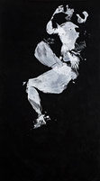

View works
The title of this series refers to a 1972 black light poster that I bought on 42nd Street when it was
still filled with porn shops. The poster, titled The Afronomical Ways, equates sex positions with
astrological signs. On a black velvet, flocked background, it depicts ecstatic day-glo couples
- silhouettes with Afros - cavorting among the stars. Over twenty years ago, I made paintings
based on these positions by covering my body with paint and pressing it onto black velvet.
Today, in a reprise of the series, I invite couples to make the imprints, usually in my studio. The
paintings are still on black velvet. Included here is a video recording of a painting/performance
Leo that took place at the opening of my exhibition The Golden Age at Sassa Trülzch's gallery in
June 2011.
The series also includes a video animation "The Afronomical Ways". The soundtrack features
music by my band, Dirty Mirrors.